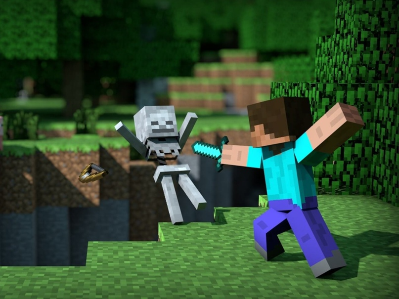
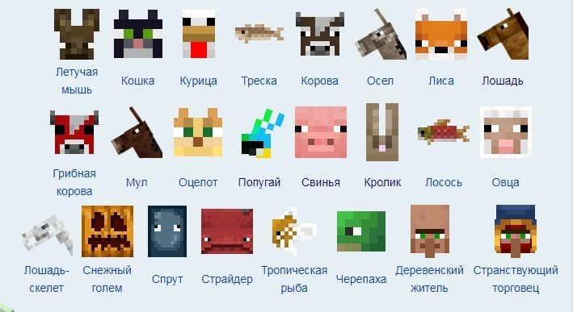
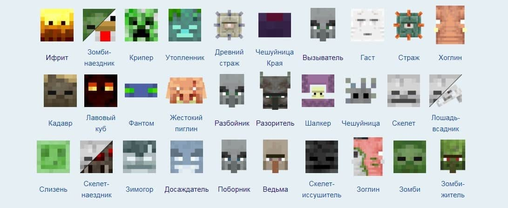

«Майнкрафт» — это приключенческая игра-песочница, у которой нет сюжета и ограничений в пространстве. Ее пользователи создают объекты и даже целые миры из виртуальных 3D-блоков по принципу LEGO. Игрок может построить из кубов что угодно: от маленькой хижины до огромного мегаполиса, задействуя неограниченную территорию. Только в базовой версии игроки могут пройти 30 млн блоков — это в семь раз больше, чем площадь планеты Земля. Minecraft — творческая игра, в которой основное внимание уделяется строительству. Все графические элементы выполнены в виде трехмерных блоков и в целом имеют мультяшный вид. Блоки сделаны из различных материалов, таких как камень, дерево, глина или руда, которые игроки добывают или собирают после применения взрывчатки. Игру можно пройти самостоятельно или объединиться с другими пользователями, чтобы создать общий мир. Главный смысл игры — это добыча блоков и строительство из них самых разных объектов, от маленькой избушки до замкового комплекса. Игра дает простор для фантазии и не ограничивает в ресурсах. В среднем игровой мир «Майнкрафта» состоит из 920 квадриллионов блоков
Мир Minecraft населен самыми разными существами — начиная с животных, которые встречаются в реальной жизни, и заканчивая фантастическими созданиями, уникальными для игры. Некоторые обитатели с радостью подружатся с пользователем и будут сопровождать его в путешествии или помогут получить полезные предметы, другие же будут атаковать геймера, как только увидят. Рассказываем, какие мобы есть в Minecraft и какой дроп можно получить из этих существ.
Дружелюбные мобы в Minecraft — существа, которые изначально положительно относятся к игроку. Они не станут нападать, а при получении урона в большинстве случаев попытаются убежать. Многих из них можно приручить, а на некоторых даже покататься верхом с помощью седла.
Враждебные мобы атакуют игрока при любом раскладе, даже если тот не трогал их.
